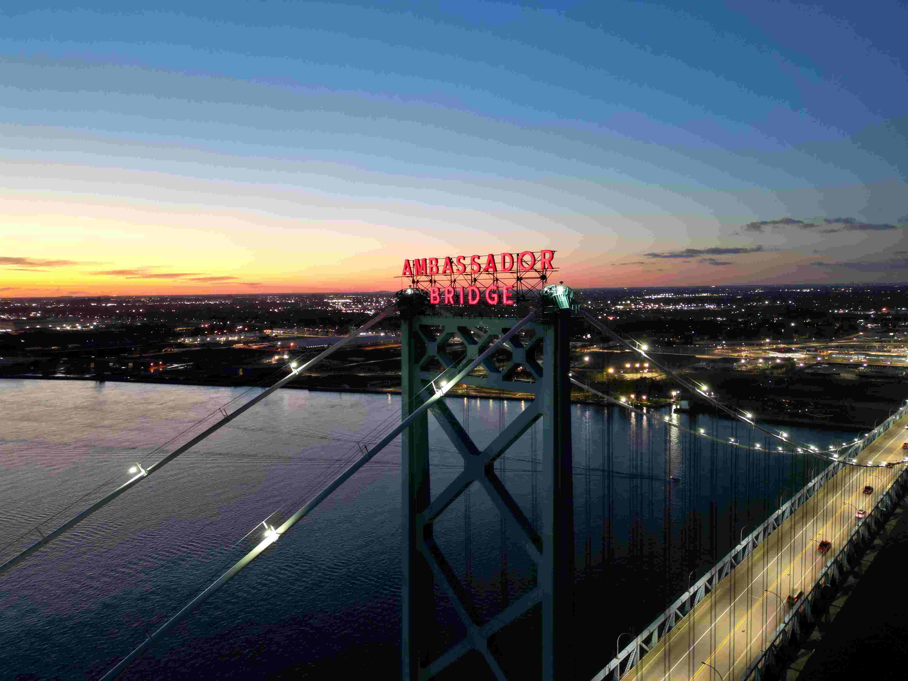
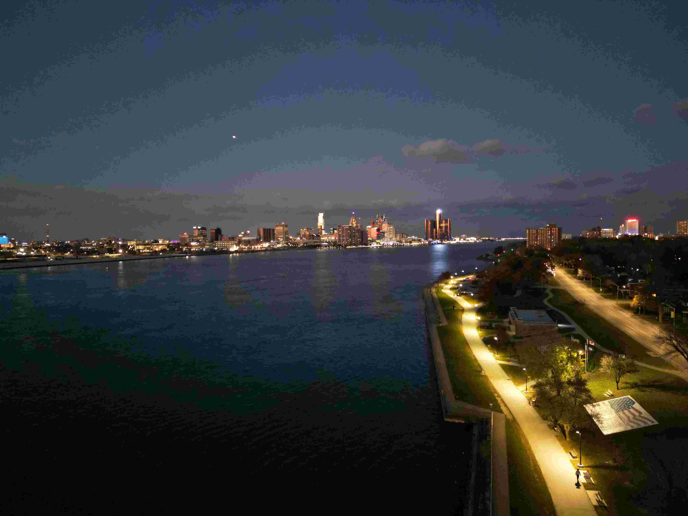

Some of my Mini 3 Pro content



The DJI Mini 3 Pro improves upon the image quality by including a 48mp camera allowing it to shoot higher quality.
It has more wind stabilization so it can withstand more wind and take stable photos. I haven't had the chance to capture much content with this drone but I was able to see the quality difference the first time I tried it. You may have noticed that I decided to select all evening time
photos for this drone. This was to show that it is really good in low light situations too. I included a photo of the Ambassador Bridge at sunset, the Detroit River, and another of the bridge taken from the ground.
The 48mp camera, combined with F1.7 aperture, allows the drone to capture more quality and light during low light situations giving it the
quality improvement from the mini 2 series.
Email me at: chowdh52@uwindsor.ca
Back to Top of Page
Adib Md Alim Chowdhury
chowdh52@uwindsor.ca